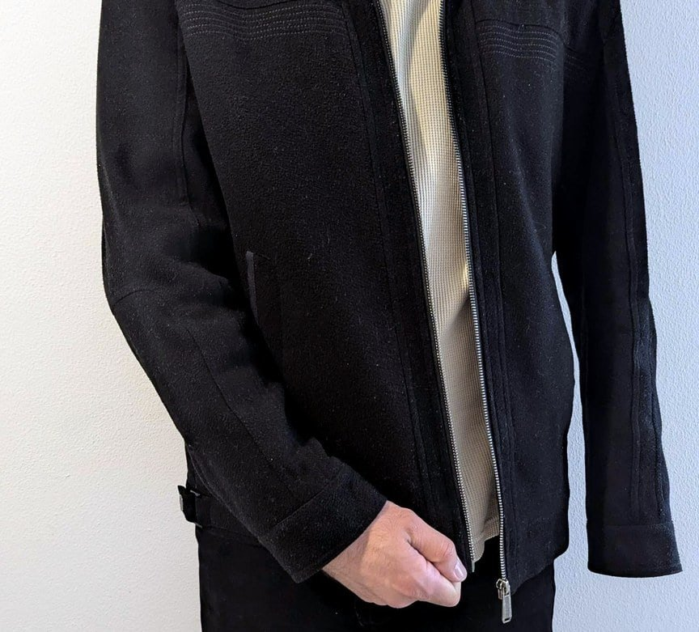
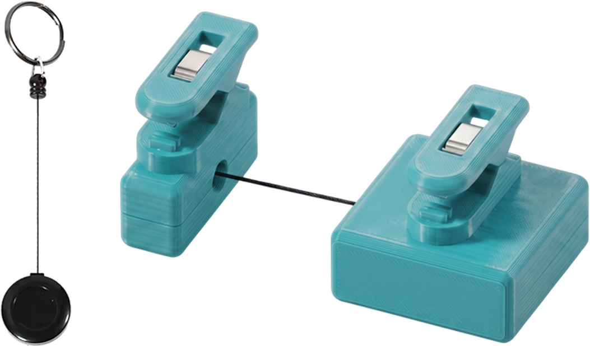

מכשיר עזר לסגירת רוכסן
עיצוב לנגישות | ארגונומיה
הבעיה
קושי לחבר רוכסן ביד אחת, לאנשים עם מוגבלות פיזית או ללא יד.


הפתרון
המוצר, בשילוב מנגנון "גלגלת משיכה" ותופסנים, מקרב בין שני צידי הבגד ומאפשר לחבר את הרוכסן ביד אחת.


עיצוב לנגישות | ארגונומיה
קושי לחבר רוכסן ביד אחת, לאנשים עם מוגבלות פיזית או ללא יד.

המוצר, בשילוב מנגנון "גלגלת משיכה" ותופסנים, מקרב בין שני צידי הבגד ומאפשר לחבר את הרוכסן ביד אחת.
